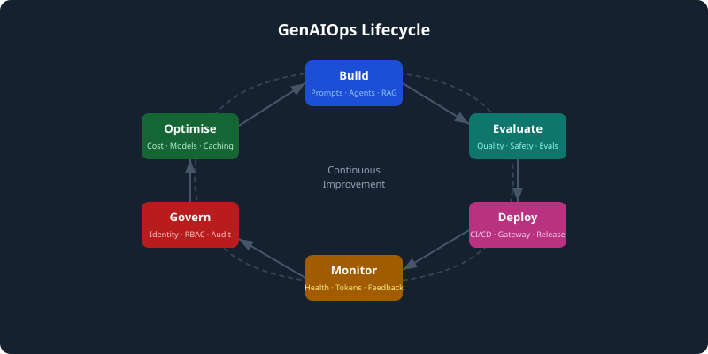

GenAIOps CSA One-Page Crib Sheet
GenAIOps turns generative AI from experiments into operated enterprise services. Use this quick reference to anchor customer conversations around lifecycle stages, quality, governance, and practical delivery decisions.

Lifecycle
| Stage | Remember |
|---|---|
| Build | Prompts, agents, retrieval, orchestration, tools. |
| Evaluate | Groundedness, relevance, coherence, safety, task success. |
| Deploy | Managed endpoints, CI/CD, gateway, release controls. |
| Monitor | Latency, errors, tokens, feedback, safety events, answer quality. |
| Govern | Identity, RBAC, audit, responsible AI, project isolation. |
| Optimise | Cost, model choice, context design, caching, continuous improvement. |
Five useful soundbites
- The shift is from prompt experimentation to operated AI services.
- Evaluation is the bridge between demo confidence and production confidence.
- Monitor system health and answer health.
- Agents need boundaries: allowed tools, allowed data, allowed actions.
- Cost control starts with visibility, quotas, and model selection.
If asked about hallucination
Use trusted retrieval, citations, evaluation, prompt constraints, monitoring, user feedback, and human review for high-risk outcomes.
If asked about cost
Track token use, choose models by task, reduce unnecessary context, cache where appropriate, enforce quotas, and measure cost per successful outcome.
If asked where to start
Start with one bounded use case, approved data sources, clear quality criteria, basic monitoring, responsible access control, and a decision point for scale.
Discovery questions
- What outcome would make this worth scaling?
- Which sources are trusted enough to ground answers?
- What happens when the AI is wrong or uncertain?
- Who owns quality after go-live?
- How will usage and cost be tracked?
Tip: Print this page or save as PDF for a quick desk reference during customer conversations.